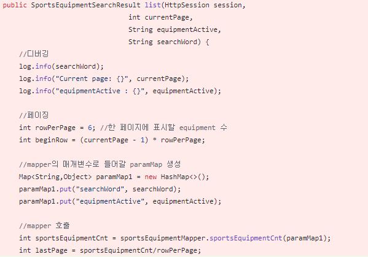
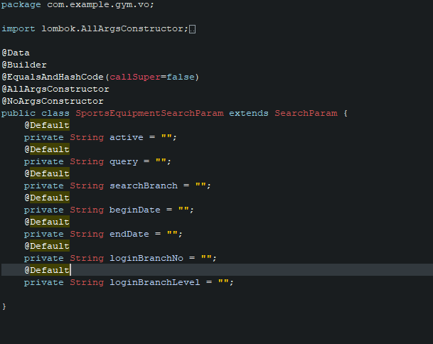
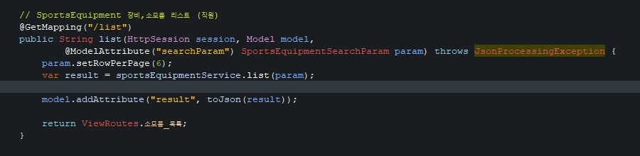

회원가입 시 실제 등록되지 않은 사진들이 모두 서버에 저장되어 메모리 공간을 차지하는 문제가 발생하고
있습니다.
2. 프로필 수정 시 중복 파일
저장
사용자가 프로필을 수정할 때마다 프로필 사진을 선택할 때마다 실제 스토리지에 새로운 파일이 저장되고,
이 파일의 UID를 반환하는데, 이로 인해 이전 파일들이 계속해서 남아있는 증상이 발생하고 있습니다.
원인
코드 일관성을 유지하기 위해 파일 업로드를 API로 처리하고, 사용자 경험 향상을 위해 브라우저에서
비동기적으로 이를 처리하도록 구현하였기 때문에 이러한 이슈가 발생하였습니다.
해결방법
1. 스프링 스케줄러를 활용한
주기적인 삭제 로직 구현
- 스케줄러를 사용하여 정기적으로 서버에 저장된 파일들을 확인하고, 실 DB의 이미지 파일 정보를 저장하는
테이블을 전체 조회합니다.
- 이후 실제 파일이 업로드 되는 경로의 전체 파일에 대하여 존재 여부를 판단하고, 존재하지 않는 파일은
삭제합니다.
- 주기적으로 불필요한 파일을 삭제하므로 메모리 공간을 효율적으로 관리할 수 있습니다.
2. 파일 업로드 시 임시
디렉토리 활용
- 실제 가입 전 파일을 업로드할 때, 이를 서버에 저장하는 대신 임시 디렉토리에 저장합니다.
- 사용자의 가입이 완료되면 해당 파일만 서버에 복사하고, 나머지는 삭제합니다.
- 불필요한 파일을 서버에 저장하지 않기 때문에 메모리 공간을 더 효율적으로 활용할 수 있습니다.
선택한 해결 방법과 그 이유
임시 디렉토리를 활용한다면 사용자가 업로드한 파일이 서버 디렉토리 외부에 위치하므로 보안상의 문제가 발생할
수 있으며,
파일 이동 작업이 추가되어 가입 프로세스에 시간이 더 소요될 수 있다는 의견을 반영하여 스프링 스케줄러를
활용하여
주기적인 삭제 로직을 구현하는 것을 선택하여 해결하였습니다.
이 과정을 통하여 서버에 무리를 주지 않으면서도 여유 메모리 공간을 확보할 수 있는 방향으로 개선되었습니다.
메이븐 빌드 시 톰캣 오류 발생 이슈
문제
서버 배포를 하기 위해 메이븐 클린 후 메이븐 빌드 시 톰캣에서 클래스을 하지 못하는 인식 오류 버그가
발생하였습니다.
원인
프로젝트내에 pom.xml 파일이 있지만 메이븐 클린 진행 시 메이븐이 pom.xml 파일을 정상적으로
인식하지 못하는 버그가 발생
해결방법
STS TOOL 기능 사용
- 메이븐 클린을 진행하지 않고 STS TOOL 내의 project clean 진행 후 메이븐 빌드를
진행하여 톰캣 클래스 인식 오류를 해결하였습니다.
선택한 해결 방법과 그 이유
정확한 원인은 확인중으로 의존성 관련 문제로 추측하여 테스트 진행중입니다.
잘못된 접근 이슈
문제
1. 보안 이슈
에러 페이지에는 시스템이나 애플리케이션에 대한 정보가 담겨있을 수 있으며, 에러 세부 내용이 노출되면
해커들에게 공격의 기회를 제공할 수 있습니다.
2. 사용자 경험
사용자에게 에러 세부 내용을 노출할 경우, 이해하기 어려운 기술 용어나 스택 트레이스가 표시될 수 있어
사용자의 혼란을 초래할 수 있습니다.
원인
프로젝트에는 특별한 에러 페이지가 구현되어 있지 않아, 예상치 못한 에러 발생 시 기본적인 에러 페이지가
노출되고 있습니다.
해결방법
1. 웹 서버 설정
- 대부분의 웹 서버는 특정 HTTP 상태 코드에 대한 에러 페이지를 설정할 수 있는 기능을
제공합니다.
- Apache나 Nginx와 같은 웹 서버에서는 ErrorDocument나 error_page와 같은
디렉티브를 사용하여 에러 페이지를 설정할 수 있습니다.
2. 서블릿 필터 또는 리스너
- Java 기반의 웹 애플리케이션에서는 서블릿 필터나 리스너를 활용하여 특정 예외가 발생했을 때 에러
페이지로 리다이렉션하는 방법을 사용할 수 있습니다.
3.
@ControllerAdvice 어노테이션을 사용
- 전체 애플리케이션에 걸쳐서 예외를 처리하는 역할을 하는 @ControllerAdvice 클래스를 생성하여
예외를 처리할 수 있습니다.
선택한 해결 방법과 그 이유
웹 서버나 서블릿 필터 또는 리스너를 활용하여 에러 페이지를 설정하는 것보다
Spring 개발 환경의 장점인 어노테이션을 활용하여 더 간편하게 예외 처리를 할 수 있다고 판단했습니다.
@ControllerAdvice 클래스를 생성하고 예외 처리를 위한 로직을 작성하여 에러 페이지를 공통
처리하였습니다.
Pagination 규칙 통일
필요성
1. 중복 코드 제거
각 조회 액션에서 페이징 처리와 관련된 코드가 중복되어 나타나고 있습니다. 이로 인해 코드의 가독성과 유지보수성이 저하되고
있습니다.
2. 확장성
현재의 구조는 각 액션에서 페이징 처리를 수행하고 있어 새로운 액션을 추가하거나 수정할 때 중복된 코드를 반복 작성해야
하는 불편함이 있습니다.
리팩토링
1. 페이징 기능이 있는 페이지
- 페이징 처리를 위한 공통 속성들을 포함하는 Page Vo를 구현하였습니다.
- 이해당 프로젝트의 여러 모듈에서 발생하는 페이징 로직을 Page Vo를 활용하여 통일된 방식으로 처리하였습니다.
2. 페이징 기능과 검색기능이 함께 있는
페이지
검색 기능을 위한 공통 속성들을 포함하는 SearchParam Vo를 구현하고 페이징 처리를 위해 Page Vo를
상속받아 확장하였습니다.
이해당 프로젝트의 여러 모듈에서 발생하는 페이징, 검색 로직을 SearchParam Vo를 활용하여 통일된 방식으로
처리하였습니다.
이점
1. 코드 재사용성 향상
Page VO를 도입함으로써 페이징과 관련된 로직을 각 모듈에서 중복으로 구현하는 것을 방지하고 코드 재사용성을
높였습니다.
2. 유지보수 용이성
페이징 처리의 변경이 필요한 경우, Page VO 내부만 수정하면 되므로 유지보수가 간편해졌습니다.
3. 검색 기능 표준화
SearchParam을 통해 검색 기능에 필요한 속성들을 표준화하였으며,
SearchParam을 통해 검색과 페이징을 한 번에 처리할 수 있도록 편리한 인터페이스를 제공하였습니다.



명시적인 메서드 및 변수 네이밍
필요성
가독성 저하
대표적으로 SportsEquipmentService 클래스에 있는 모든 메서드에 SportsEquipment가 중복되어 가독성이 저하 될 우려가 있습니다
리팩토링
1. 가독성 향상
불필요한 중복어를 제거함으로써 메서드 및 변수명이 간결해졌습니다. 이로써 코드를 읽고 이해하기 쉬워졌습니다.
2. 유지보수 용이성
더 명확하고 직관적인 명명 규칙을 적용함으로써, 향후 코드 변경 및 유지보수 작업이 더욱 쉬워졌습니다.
이점
1. 코드 재사용성 향상
Page VO를 도입함으로써 페이징과 관련된 로직을 각 모듈에서 중복으로 구현하는 것을 방지하고 코드 재사용성을
높였습니다.
2. 유지보수 용이성
페이징 처리의 변경이 필요한 경우, Page VO 내부만 수정하면 되므로 유지보수가 간편해졌습니다.
3. 검색 기능 표준화
SearchParam을 통해 검색 기능에 필요한 속성들을 표준화하였으며,
SearchParam을 통해 검색과 페이징을 한 번에 처리할 수 있도록 편리한 인터페이스를 제공하였습니다.
Service 레이어의 리턴 타입을 Map 이 아닌 VO로 변경
필요성
리턴 타입을 Map으로 설정할 경우 단순 오타에 의한 오류를 컴파일 단계에서 캐치하지 못할 수 있으며,
VO 객체에 비하여 유지보수/가독성/유연성이 저하될 우려가 있습니다.
리팩토링
제네릭을 사용한 List 타입의 list 필드와 SearchParam 타입의 param 필드를 포함하는 SearchResult 클래스를 구현하였습니다.
또한, Service 레이어에서는 @ModelAttribute 어노테이션을 사용하여 초기 검색 파라미터를 생성하고
"searchParam"이라는 이름으로 모델에 추가하도록 리팩토링 하였습니다.
이점
1. 컴파일 타임 오류 방지
Map은 동적인 타입을 사용하므로 컴파일 타임에 오류를 캐치하기 어려울 수 있습니다.
반면에 VO는 정적인 타입을 사용하므로 오타와 같은 오류를 컴파일 타임에 쉽게 발견할 수 있습니다.
2. 유지보수 용이성
VO는 필드명이나 타입 변경이 쉽고 안전하게 이루어집니다.
Map의 경우, 필드명이 문자열로 표현되기 때문에 이를 변경할 때 문자열을 일일이 찾아 수정해야 하는 번거로움을 줄였습니다.
3. 가독성 개선
VO는 명시적으로 필드와 타입을 정의하므로 코드를 읽는 사람에게 더 명확하고 가독성이 좋은 정보를 제공할 수 있게 되었습니다.
4. 유연성 증가
VO를 사용하면 해당 객체의 메서드와 속성을 활용하여 더 많은 기능을 추가하거나 변경할 수 있습니다.
이는 코드의 유연성을 향상시키고 다양한 상황에 대응할 수 있도록 리팩토링 하였습니다.
 HTML5
HTML5 Tailwind CSS
Tailwind CSS JS/Jquery
JS/Jquery Vue.js
Vue.js Java
Java Spring
Spring JSP/JSTL
JSP/JSTL MyBatis
MyBatis MySql
MySql MariaDB
MariaDB OracleDB
OracleDB HeidiSQL
HeidiSQL Eclipse
Eclipse SpringBoot
SpringBoot Git
Git AWS
AWS